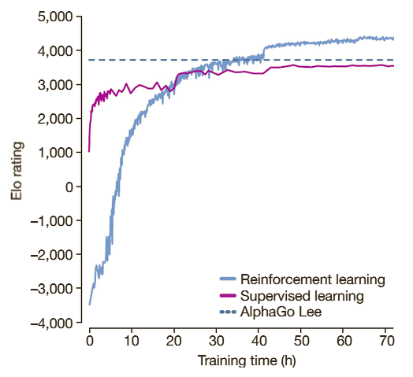

Seoul · 2016-03-10Game 2 · Move 37AlphaGo vs. Lee Sedol
The movethat taughta machineto dream.37 · K10 · SHOULDER HIT ON THE 5TH LINE
For 2,500 years, professional Go knew a rule: don't play shoulder hits on the fifth line.
On March 10, 2016, a neural network played one anyway — and won.
The move's probability, under any human model, was 1 in 10,000.
This is the story of how it got there.
SCROLL ↓
§ 01 · The position
A stone where nobody looks.
Move 37 is K10 — a shoulder hit on the fifth line, played against Lee Sedol's
fourth-line stones on the right edge of the board. In classical Go theory, stones on the fifth line
are considered too high to fight for territory and too low to build influence.
They are the orphan line.
AlphaGo (black) Lee Sedol (white) Move 37 — K10
Why the fifth line?
Territory is most efficiently claimed on the third and fourth lines
— a principle distilled by centuries of tournament play.
The fifth line gives too much ground below; the fourth line gives too much sky above.
The shoulder hit against Lee's 4-4 stone on the 5th line was, by consensus,
slack — a move that accomplished nothing a human would name.
"I thought it was a mistake."
— Michael Redmond, 9-dan, live commentary
"It's not a human move. I've never seen a human play this move."
— Fan Hui, 3-time European champion
§ 02 · The heresy
Five rules broken, one game won.
Go proverbs aren't laws, they're compressed experience — patterns that survived because they worked.
Move 37 broke several at once.
Proverb violated
Play on the 3rd or 4th line
The 5th line is too high for territory, too low for influence. For centuries, pros avoid it in the opening.
Proverb violated
Don't shoulder-hit from a distance
Shoulder hits are contact plays — they only work when local fighting gives you something back.
Proverb violated
Don't strengthen the opponent
Playing close to a solid enemy stone usually just helps them get stronger, for free.
Proverb violated
Respect thickness
Don't invade near a thick wall. Lee had influence on the right side; black should stay away.
Proverb violated
Keep the initiative local
Move 37 ignored three ongoing fights. A human plays where the fire is — AlphaGo opened a new continent.
Human-move probability (AlphaGo's policy network, trained on 30M pro moves)
0 %AlphaGo predicted its own move at ≈ 1 in 10,000 — yet chose it anyway.100 %
So why did it play it?
The policy network — trained on human games — said: don't.
The value network and tree search said: do.
Move 37 is the moment the two disagreed, and the search won.
AlphaGo had seen, in its own self-play, positions no human had ever drawn — and in that hidden atlas,
K10 was not slack. It was the move that made the whole right side float.
Lee Sedol · Game 2 · Seoul · 2016-03-10
§ 03 · The machinery
How does a network learn to play Go?
Three ideas, stacked: reinforcement learning teaches what to prefer,
neural networks teach what to recognize, and Monte Carlo Tree Search teaches what to check.
Reinforcement learning, in one loop.
⚑
State s
Current board position, encoded as a 19×19 image.
→
◈
Action a
The policy π(a|s) samples a move.
→
★
Reward r
+1 if you eventually win, −1 if you lose. That's it.
Tune the policy's parameters $\theta$ so that trajectories $\tau$ (sequences of states, actions, rewards)
collect as much discounted reward as possible. For Go, the reward is terminal — +1 for a win, 0 otherwise —
and the horizon is an entire game.
Every action taken on the path to winning gets its log-probability nudged up;
every action on the path to losing gets nudged down. After millions of games,
the nudges accumulate into a coherent sense of "good move."
A separate network estimates, from raw pixels, the probability the current player eventually wins.
This is the voice that overruled the policy network on Move 37.
Monte Carlo Tree Search — thinking ahead, selectively.
The policy network suggests candidate moves; the value network scores leaf positions.
MCTS is the loop that stitches them into a search — not a brute-force tree, but an asymmetric one
that spends its budget on the lines that look interesting.
Q: mean value of this move so far. P: prior from the policy net.
N: visit count. The first term exploits moves that have worked;
the second explores moves that look promising but under-visited. The constant $c_{\text{puct}}$ sets the trade-off.
The four phases
Select — walk down the tree, greedy by UCT, until you hit a leaf. Expand — add one new child, scored by the policy network as its prior P. Evaluate — call the value network on the new leaf for an instant win estimate. Backup — propagate that value back up the path, updating every ancestor's Q and N.
Repeat tens of thousands of times. The most-visited move at the root is played.
§ 04 · The arc
From imitating humans to leaving them behind.
Every version of AlphaGo dropped another crutch. The last one — AlphaZero — started from
nothing but the rules of the game.
2015 · ALPHAGO FAN
Bootstrap from 30 million human moves.
Supervised learning on KGS amateur + pro games. A policy network predicted
what a human expert would play next; a separate value network learned from rollouts.
MCTS wrapped both. This version beat Fan Hui, 5–0, behind closed doors.
Policy: supervised · Games seen: ≈ 30M
2016 · ALPHAGO LEE
Self-play starts to matter.
Still bootstrapped from human data, but now fine-tuned by reinforcement learning against
older copies of itself. This is the version that played Lee Sedol, 4–1, in Seoul
— and that played Move 37. The policy network still leaned human;
the value network had started to diverge.
Policy and value unified into one residual network. Played 60 online games against
top pros under the handles "Master" and "Magister" — and won 60–0.
Beat Ke Jie 3–0 in the Future of Go Summit. Still seeded by human games, but barely.
One network · Fewer rollouts · Stronger search
2017 · ALPHAGO ZERO
Zero human games. Nothing but the rules.
No human data. No handcrafted features. Starts with a randomly initialized network and
plays itself. After 3 days, it surpasses AlphaGo Lee. After 40 days, it
surpasses all prior versions — 100–0 against AlphaGo Lee. In the process,
it rediscovered centuries of human joseki, then discarded those humans had gotten wrong.
Self-play only · 4.9M games · 1 TPU at inference
2018 · ALPHAZERO
One algorithm, three games.
Same algorithm, applied unchanged to Go, Chess, and Shogi. In 24 hours of self-play,
matched or exceeded world-champion programs in each. No game-specific knowledge.
No opening book. Just policy + value + MCTS + raw compute.
Generality proved · Domain knowledge: rules only
Elo strength by training regime
Approximate playing strength, relative to a top human pro (≈ 3,600 Elo).
Top human pro
≈ 3,600
AlphaGo Fan
≈ 3,140
AlphaGo Lee
≈ 3,740
AlphaGo Master
≈ 4,860
AlphaGo Zero
≈ 5,185

AlphaGo Zero · Elo vs. self-play days
Why self-play beat imitation
Imitating humans bounds you by humans. Self-play has no such ceiling — every network
trains against a slightly stronger version of itself, and the gradient keeps pointing up.
The more surprising result was that removing human data also improved the network:
with no proverbs to unlearn, Zero converged on a simpler, cleaner style.
The self-play loss
$$ \ell \;=\; (z - v)^2 \;-\; \boldsymbol{\pi}^{\!\top} \log \mathbf{p} \;+\; c \,\|\theta\|^2 $$
The network's value $v$ is regressed to the actual game outcome $z$; its policy $\mathbf{p}$
is cross-entropy'd against the MCTS visit distribution $\boldsymbol{\pi}$ from that same move.
The network teaches itself by imitating its own search.
§ 05 · The long view
Amara's Law.
We tend to overestimate the effect of a technology in the short run and underestimate the effect in the long run.
— Roy Amara, Institute for the Future
The short run: a single astonishing move.
In March 2016, Move 37 felt like a singularity. Commentators fumbled for words.
Newspapers wrote that Go had "fallen." There was a brief public fever
— the overestimation phase — where it seemed every white-collar job was a week away from obsolescence.
The long run: a quieter, deeper shift.
The fever cooled. But underneath, the ideas that produced Move 37 — learned value functions,
MCTS-guided policy improvement, scalable self-play — kept propagating.
They are now in protein folding (AlphaFold), matrix multiplication (AlphaTensor),
chip layout, weather modeling, and, arguably, every frontier language model.
The move was the headline. The framework is the story.
§ 06 · Coda
What Move 37 actually was.
Not a mistake. Not a glitch. Not a new proverb waiting to be written into the canon.
Move 37 was a synoptic view of a position — one that exists only because a network
played ten million games with itself in the dark, and filed away patterns no human had time to see.
Lee Sedol won Game 4 with Move 78 — a move AlphaGo itself rated at 1 in 10,000.
The symmetry is the real lesson. Two minds, each astonishing the other with a move the other
could not predict. Intelligence, whatever it is, is not a scalar.